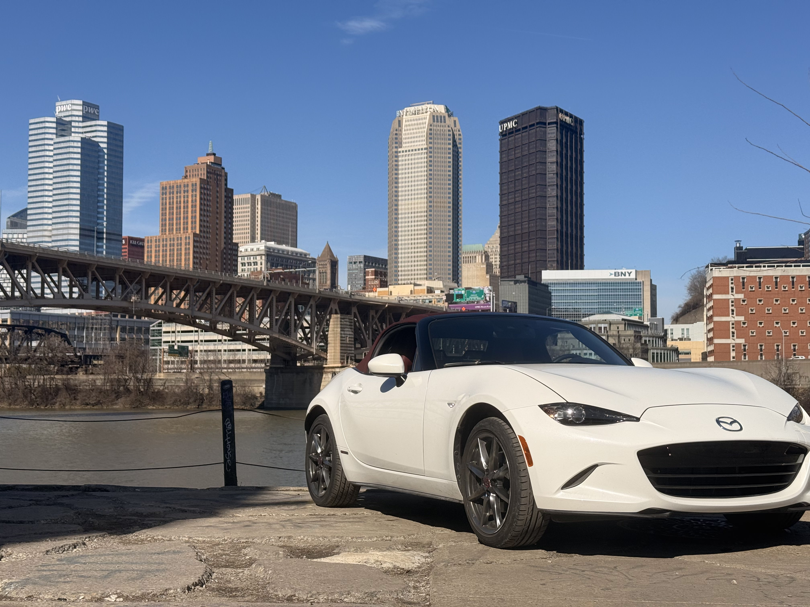
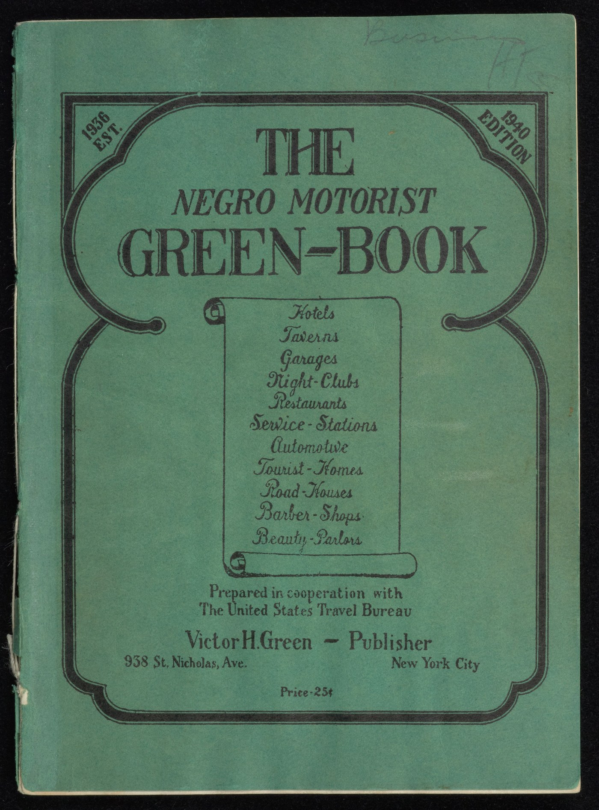

Essay · Transportation
It Takes a Planet
to Drive a Miata
A 2,339-pound car,
a 23,000-kilometer supply chain,
and the arithmetic of freedom.
Chapter 1 · The car I drive
There is a particular kind of freedom that comes from driving a small, manual, open-top sports car, and for the last several months I have been trying to understand it. My car is a 2020 Mazda MX-5 Miata ND, 100th Anniversary Edition: Snowflake White Pearl over a Cherry Red soft top, red Nappa leather inside, assembled at the Ujina Plant on a reclaimed peninsula in Hiroshima Bay. It weighs 2,339 pounds, makes 181 horsepower and is the closest thing sold new in the United States to the vintage idea of what a car is. The roof is a manual soft top. I unlatch it with one hand and throw it back behind me, and the whole action takes under two seconds. The shifter has a throw of about two inches. Every gear change is a small, deliberate action I perform with my right hand, and the car answers immediately. Driving it feels, to me, like an extension of my own body.
Plugged into the dashboard is an OBD-II port. The port itself was mandated in 1996 by the California Air Resources Board so mechanics could read emissions codes. Today, through a small dongle the size of a matchbox, it turns every drive into a dataset: speed, altitude, engine load, GPS position to five decimal places, every second the car is moving. I can scroll back through the log at my kitchen table and encounter myself, in retrospect, as a sequence of numbers.
This piece explores what that dataset reveals and what the car itself conceals. Through examining the data the car knows about me, the data that others would now like to know, the older American history of drivers for whom movement was never free, and the supply chain that brought this specific object into my driveway, I will show that the freedom I feel behind the wheel is never actually mine alone. It is mediated, upstream and downstream, by systems and histories I did not choose. The purpose of writing this is not to ruin the feeling. It is to understand it.
Chapter 2 · What the car records
What the car records
The first of the car's many lessons is that it knows me. Between February 27 and April 17, a period of fifty days, I drove 2,320 kilometers over three hundred and thirty-six separate trips. The average trip was 6.9 kilometers, the median 4.0. Almost every one of them began or ended at my apartment on Melwood Avenue, 862 times across the fifty days, or on the Carnegie Mellon campus, 894 times, and many of them ran between the two. The other repetitions were smaller and more personal: 217 passes through Schenley Park, where I typically go to drive along Schenley Drive and Circuit Road, which are relatively empty roads with fun turns; 39 trips to the Color Park on the South Side, where I go to read, climb and run on trees, concrete blocks, and other structures; and 21 to the East Liberty Home Depot between April 3 and April 12 for Booth; $1,200 total spent, rarely on lumber, which barely fits in my car. The fastest single instant, late on a different empty road in the city, was 96.5 miles per hour. The coldest morning was 17 degrees Fahrenheit. The average temperature across the whole period was 52.7. The OBD dongle recorded all of it, more precisely than I ever could.
Three hundred and thirty-six trips. Fifty days, 2,320 kilometers, almost all of it above a single city.
862 began or ended on Melwood Avenue. Where I live.
894 touched the Carnegie Mellon campus. Where I study, and where most of my friends are.
217 passed through Schenley Park. To drive along Schenley Drive and Circuit Road, which are relatively empty roads with fun turns.
39 to the Color Park on the South Side. Where I go to read, climb and run on trees, concrete blocks, and other structures.
21 to the East Liberty Home Depot. All between April 3 and April 12 for Booth. Total spent was $1200. Rarely on lumber, which barely fits in my car.
Through this, the car demonstrates a kind of intimacy that I had not expected from a piece of machinery. It quietly quantifies what I had experienced. When I scroll back through any single day of it, the data helps me reconstruct it: I remember that the Tuesday morning was rushed, that the detour to the Color Park was the first warm afternoon in weeks, that the late Saturday drive was a reward for a stressful week. The OBD does not tell me any of this directly, but it makes it possible. In this sense, the dongle is an act of journaling.
However, the same port is the most conservative version of what a modern car can record. A 2020 Miata is, by contemporary standards, a relatively unconnected vehicle. Newer Mazdas, like every General Motors vehicle since 2015, every Honda, every Hyundai and most Fords, do not wait for a third-party dongle. They stream comparable data continuously to the manufacturer.
Fifty-day totals. Premium delta is illustrative; individual telematics models vary.
In March 2024 the New York Times reported that automakers had been selling granular driver data to insurance brokers.
Hard-braking events. Every moment the car decelerated sharply. The same moments that, to me, were just traffic.
Hard-acceleration events. The reverse side of the same coin. The actuarial engine does not know the road was empty.
96.5. A single number. In most telematics scoring programs, it disqualifies me from the safe-driver discount entirely.
Estimated premium change. Illustrative only. Individual models vary. The direction is what matters.
In March 2024, The New York Times revealed that General Motors had been selling detailed driving information, including hard-braking events, hard acceleration and trip-by-trip GPS position, from millions of OnStar-equipped vehicles to two data brokers: LexisNexis Risk Solutions and Verisk Analytics. Those brokers then sold driver reports to insurance companies. One driver, upon requesting his file, found that LexisNexis had compiled a 130-page dossier on his driving habits. His insurance premium had risen by more than twenty percent. He had never knowingly consented. Almost two years later, in January 2026, the Federal Trade Commission settled with GM; the company agreed not to sell geolocation or driver-behaviour data to any consumer reporting agency for five years, and to obtain what the settlement called "affirmative customer consent" for twenty.
Through this, a second, darker character of the OBD data reveals itself. The same signals that, on the kitchen table, help me reconstruct how I felt about a drive are also actuarially legible. To a scoring engine, my pull-over-at-night to see a friend is a "late-night trip", which is a risk factor. The stretch where I open up the engine is "hard acceleration", which is a risk factor. The 96.5 peak on a different empty night is a "speeding event" that would, in most telematics programs, disqualify me from the safe-driver discount entirely. There is no category inside Progressive's scoring model for "Sunday", or "happy". The drive I remember as freedom is, to the insurer, a liability curve.
My dongle only talks to me. My car, if it were newer, would be talking to more people than I am.
Chapter 3 · The geography of permission
The geography of permission
To describe driving as freedom is to use the word in the way it has historically been used by the Americans for whom it was free. There is another, older version of American driving, in which the car was not a symbol of liberation but a site of hazard, and the geography of the open road was in fact a geography of permission.
In 1936, a postal carrier in Harlem named Victor Hugo Green self-published the first edition of The Negro Motorist Green Book. It was a directory of hotels, restaurants, service stations, beauty shops and boarding houses that would reliably serve Black drivers, and the tagline on its cover read "Carry your Green Book with you. You never know when you may need it." The historian Andy Masich, writing for the Heinz History Center, described it concisely: a travel guide, but in many ways a survival guide.
Pittsburgh, where I drive, appeared in its pages. Through the Green Book's thirty-year publication run, more than thirty Hill District businesses were listed at one point or another: the Terrace Hall Hotel on Wylie Avenue, the Harlem Casino Dance Hall on Centre, the Flamingo Hotel, Agnes Taylor's Tourist Home, Dearing's Restaurant, Scotty's Service Station, the Bailey and Potter's hotels, Charlotte's Beauty Salon, the Centre Avenue YMCA, Samuel Scott's service station and later his restaurant. The 1940 edition alone featured fifteen Pittsburgh listings: seven hotels, three tourist homes, one restaurant, two beauty parlors, one garage and one service station. These establishments existed in the Green Book not because they were architecturally remarkable but because they were safe. For a Black driver in 1940, the Hill District was a functional node in a sparse, patched-together national network where the freedom to travel, which other Americans took for granted, had to be negotiated one safe business at a time.
| Establishment | Type | Street | Years |
|---|
Approximate locations. Several 1940s–50s addresses are no longer mappable to any existing street and are omitted.
Most of those buildings no longer exist. Beginning in the late 1940s and continuing through the 1960s, Pittsburgh's urban renewal program razed the majority of the Lower Hill District in order to build the Civic Arena. A city councilmember, describing the neighborhood before its demolition, remarked that approximately 90 percent of the buildings "have long outlived their usefulness, and so there would be no social loss if they were all destroyed". About eight thousand residents, nearly all of them Black, were displaced. The Green Book itself ceased publication in 1967, after the Civil Rights Act of 1964 made its original function legally obsolete. As Green had once predicted, he had published himself out of a job.

The geography of permission, however, did not disappear so much as change form. Automatic license plate reader networks, or ALPRs, now catalog billions of car movements every year across the United States, typically without warrants and with retention windows measured in years. Pittsburgh police use them. The Department of Homeland Security uses them. Private companies license access to their records. A 2022 Brookings Institution analysis of national traffic-stop data found that Black drivers were stopped at roughly twice the rate of white drivers during daylight hours, and that the disparity narrowed after sunset, when officers could no longer as easily see into the car. The researchers named this the veil of darkness test. Its implication, staggering in its simplicity, is that Black drivers are pulled over disproportionately for the simple fact of being seen.
The Green Book was a directory of permission. The ALPR network is a directory of presence. Through both, the automobile has never been a neutral machine.
Chapter 4 · The supply chain of the seat
The supply chain of the seat
Thus far, this piece has examined how my freedom behind the wheel is mediated by what the car records about me and by the older American histories I drive on top of. But the car itself, the object sitting in my driveway, has a history of its own, and that history is the most consequential mediation of all.
The red Nappa leather of my driver's seat measures approximately 1.5 to 2.5 square meters of finished hide. It is cut from pieces of roughly four different animals, assembled into six panels, stitched over a high-strength steel frame supplied by JFE Steel from the city of Fukuyama, Japan, and wrapped around polyurethane foam. Delta Kogyo, a seat manufacturer in Fuchu-cho near Hiroshima, assembled it. The seat travelled approximately four hours by truck to Mazda's Ujina Plant No. 1, on a reclaimed peninsula in Hiroshima Bay, where it was installed at a specific workstation on shift 2, logged with timestamp against my car's VIN and inspected by a named member of the quality control team. From that moment forward, the seat's provenance is impeccable. Every subsequent transfer, from Ujina to the dealership, from the dealership to me, is captured in a paper trail that Mazda can reconstruct at any time.
What happened before that moment, however, is something else entirely.
Step 1 · Hiroshima
At Mazda's Ujina Plant No. 1, on a reclaimed peninsula in Hiroshima Bay, the seat is installed, timestamped, logged against the car's VIN.
Step 2 · Fuchu-cho
Four hours upstream by truck, Delta Kogyo has sewn the seat cover over a JFE steel frame. Seat value: roughly $275.
Step 3 · Yamagata
The finished hides were cut and dyed at Midori Auto Leather, in northern Japan. Struck 40,000 times by a staking machine. 35% fell as waste.
Step 4 · Ludwigshafen
German chemistry feeds in. An azo dye from BASF on the Rhine produces the red. Fatliquors include Norwegian fish oil and Malaysian palm oil.
Step 5 · Khromtau
Kazakhstan, "chromium city." Chromium from the Donskoy mine cross-links the collagen and makes the leather stable. Groundwater is not.
Step 6 · Xinguara
In a chrome drum in the Brazilian state of Pará, four hundred hides are tanned together over forty-eight hours. Individual animal origin disappears.
Step 7 · The paper trail
The supply chain stops cooperating with a single question: where did this come from? A separate administrative mechanism makes sure of that.
Step 8 · Cachoeira Seca
A 733,000-hectare Indigenous territory where, in 2024, 1,400 hectares were cleared for illegal cattle ranches. The largest single-year deforestation of any Indigenous land in the Amazon.
Step 9 · Pittsburgh
Approximately 23,000 kilometers of material flow, condensed into a seat under a driver who is unaware of almost all of it. MSRP, 2020: $32,670.
The hides arrived at the Midori Auto Leather plant in Yamagata Prefecture, in northern Japan, already chrome-tanned in Brazil and shipped wet-blue through the port of Yokohama. Midori was founded in 1946, and its corporate history notes with some pride that it began mass production of automotive leather in 1973, the year of the first oil crisis and of the Japanese automotive industry's turn toward South American suppliers. At Yamagata the hides were retanned, dyed in heated drums at approximately 55 degrees Celsius, fatliquored, dried, softened by a Rizzi staking machine that struck each hide approximately 40,000 times, buffed, embossed with an artificial grain and finished with two coats of pigmented polyurethane before being cut on CNC machines into seat-panel templates. Thirty-five percent of every hide fell away as waste in this process, later composted and sold as agricultural fertilizer to rice farmers in the prefecture.
The red pigment is almost certainly an azo dye manufactured by BASF at its Verbund complex in Ludwigshafen, on the Rhine, one of the largest continuous chemical production sites on Earth. The fatliquoring agents, which are the chemistry that keeps the leather supple for fifteen years without cracking, came from German firms called Trumpler and TFL, whose ingredient lists span sulfonated fish oils from Norwegian and Namibian fishing operations, synthetic esters derived from Indonesian and Malaysian palm oil, and neatsfoot oil rendered from North American cattle bones.
The chromium itself, which is ultimately responsible for the leather being leather at all, was almost certainly mined at the Donskoy ore processing plant in the north of Kazakhstan, near a city called Khromtau. The name translates as "chromium city". Kazakhstan produces approximately 30 percent of the world's chromite. Hexavalent chromium contamination of the groundwater around the plant has been documented above safety thresholds, and elevated respiratory disease rates in nearby communities are a direct consequence. The chromium was partially processed through Lanxess AG in Leverkusen, Germany, before shipping to Brazil.
All of these materials, the German dyes, the German fatliquors, the Kazakh chromium, the Norwegian and Namibian fish oil, the Indonesian palm oil, converged at a tannery called Durlicouros in the town of Xinguara, in the Brazilian state of Pará. Durlicouros is Leather Working Group Gold certified, processes over one million hides per year and exports to the global automotive sector. Inside its chrome drums, four hundred or more hides from multiple slaughterhouses are tanned together across forty-eight hours. When the hides emerge, stable and grey-blue, they are ready for ocean transport. But something else has also happened. Individual animal origin has been destroyed. This destruction is not accidental; it is structural to the industry.
Through this, the supply chain stops cooperating with the question: where did this come from?
Brazil has the largest commercial cattle herd in the world, approximately 238 million head, more than India's and more than the United States'. Approximately 80 percent of all deforestation in the Brazilian Amazon is attributable to cattle ranching. In 2024 alone, the state of Pará lost 17,195 square kilometers of forest, a 421 percent increase over the year before.
A significant portion of that cleared land is, legally, not available for clearing. Cachoeira Seca, in western Pará, is a 733,000-hectare Indigenous territory belonging to the Arara people. Under the Brazilian constitution, non-Indigenous economic activity there is prohibited. Nevertheless, in 2024, Cachoeira Seca recorded the largest single-year deforestation of any Indigenous territory in the Amazon: 1,400 hectares, cleared to make room for illegal cattle ranches.
The mechanism by which cattle raised on that land ultimately reach a tannery in Xinguara, and from there a Miata seat in Pittsburgh, is a single document called the Guia de Trânsito Animal, or GTA. The GTA is a livestock transport permit, issued by the state animal health agency, and it records, for each shipment, the number of animals, their age and sex, the farm they are leaving and the farm they are going to. Importantly, it does not record where the animals were born, nor any farm in the animal's history except the most recent one.
Birth
An animal is born on an illegal ranch inside Cachoeira Seca, on land that legally belongs to the Arara.
First transfer · GTA-1
Six to eighteen months later it is trucked to a compliant neighboring farm. The GTA lists the new farm as the origin. Birthplace disappears.
Optional transfers
Through additional compliant farms, each new permit erases the previous one.
Compliance audit passes
The slaughterhouse's Visipec compliance check sees only the direct supplier. The paper trail is immaculate.
Absorption
By 2020, Gibbs Lab found 81% of deforestation in major beef supply chains came from indirect suppliers that the slaughterhouses did not monitor.
In 2020, researchers at the University of Wisconsin–Madison's Gibbs Lab applied this analysis to GTA and property records from Mato Grosso and Pará. They found that 81 percent of the deforestation in the supply chains of major Brazilian slaughterhouses came from indirect suppliers that those slaughterhouses did not monitor, and that the remaining 19 percent came from direct suppliers whose own monitoring systems had failed to catch them. JBS, the largest meatpacker in the world, acknowledged in its April 2025 SEC filing that its available monitoring procedures cannot guarantee that any given animal was raised in full compliance with applicable law.
Human Rights Watch's October 2025 investigation, Tainted, documented five specific cases in which illegal ranches inside Cachoeira Seca and the neighbouring Terra Nossa settlement sold cattle to intermediate farms, which then sold cattle to JBS slaughterhouses. The Arara people, whose ancestral territory those ranchers occupy, depend on the forest for food, medicine and cultural practice. They are now, in the language of the report, "restricted in movement in their own territory."
A raw hide at slaughter in Marabá is worth approximately twenty-three US dollars. The finished red Nappa, after the German dyes and the Kazakh chromium and the Italian staking machine in Yamagata, is worth about two hundred. The assembled seat is worth roughly two hundred and seventy-five. The car, at its 2020 MSRP, was thirty-two thousand six hundred and seventy. The hide represents about 0.07 percent of the purchase price.
This is not the injustice.
The injustice is structural. The most environmentally and humanly costly moment in the life of this object, which is the burning of a forest that, legally, belongs to the people who live in it, is simultaneously the moment least visible to anyone downstream who could act on that knowledge. The system has been designed, at every level, to allow trade at scale while preventing accountability at source.
Chapter 5 · The arithmetic of freedom
The arithmetic of freedom
Four different versions of movement-tracking have moved through this piece, and in the American imagination they do not typically sit on the same page. The first is the OBD dongle plugged into my dashboard: a private record of a private pleasure. The second is the actuarial scoring engine that rebuilds that same pleasure as a risk curve: a private record that is not actually private. The third is the Green Book, the ALPR network, the traffic-stop asymmetry that persists to this day: a public record of a public constraint, borne by the American drivers whose freedom was never assumed. The fourth is Cachoeira Seca, where mobility is not being tracked but taken, where the constraint on movement is not surveillance but dispossession.
Through this, the object in my driveway reveals itself as a meeting point of four regimes of freedom, distributed unequally across four continents and linked by a single piece of leather about a meter and a half on a side. My drive is made possible by each of these regimes, and was quietly impoverished by my inability, until now, to see them.
Chapter 6 · Coda
Coda
The roof still comes down in under two seconds. The engine still sits where it sat. The shifter still throws the same two inches. The OBD-II dongle is still plugged in, and the red Nappa leather is still, by any measure I can name, beautiful.
Knowing what I know now does not resolve anything. It does not make the car less of a pleasure. It does not give the Arara back the 1,400 hectares of forest they lost in 2024. It does not unwrite the Green Book, or unbuild the Civic Arena on the ruins of the Hill District, or retract the 130-page LexisNexis report that somebody in Michigan received last year. What it does, I think, is interrupt the word freedom in the middle of itself. The drive that felt unmediated has turned out to be one of the most mediated objects I own, and most of that mediation takes place in locations I will likely never see and involves people I will never meet. The feeling of freedom is real. It is also the emotional front-end of a system that is not free for everyone who made it possible.
The reader closes this piece, I hope, with the same complicated realisation I carried out of the research. That the pleasures we take for granted are almost always the last, most visible step of systems that have cost someone else something. That becoming aware of those systems does not obligate us to abandon the pleasures, but it does change what the pleasures mean. The car will remain in my driveway. I will keep driving it. But I will, I think, drive it differently.
"The cost of a thing is the amount of what I will call life which is required to be exchanged for it, immediately or in the long run." — Henry David Thoreau, Walden, 1854